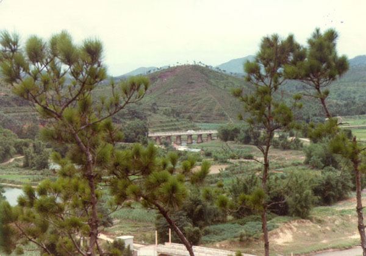

|  |
|
This picture was taken from Star Hill 星山 by Gene in 1985 with comment from Yanying: The bridge in the middle of the picture is the Railway Bridge (火車橋). On the right side of the Railway Bridge is the bus station of 3 hamlets * He Qing Hamlet 河清里，Lian Zhou Hamlet 連洲里，and San Duo Hamlet 三多里(舊村). |